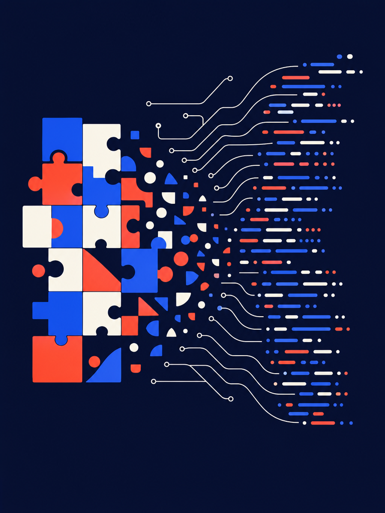
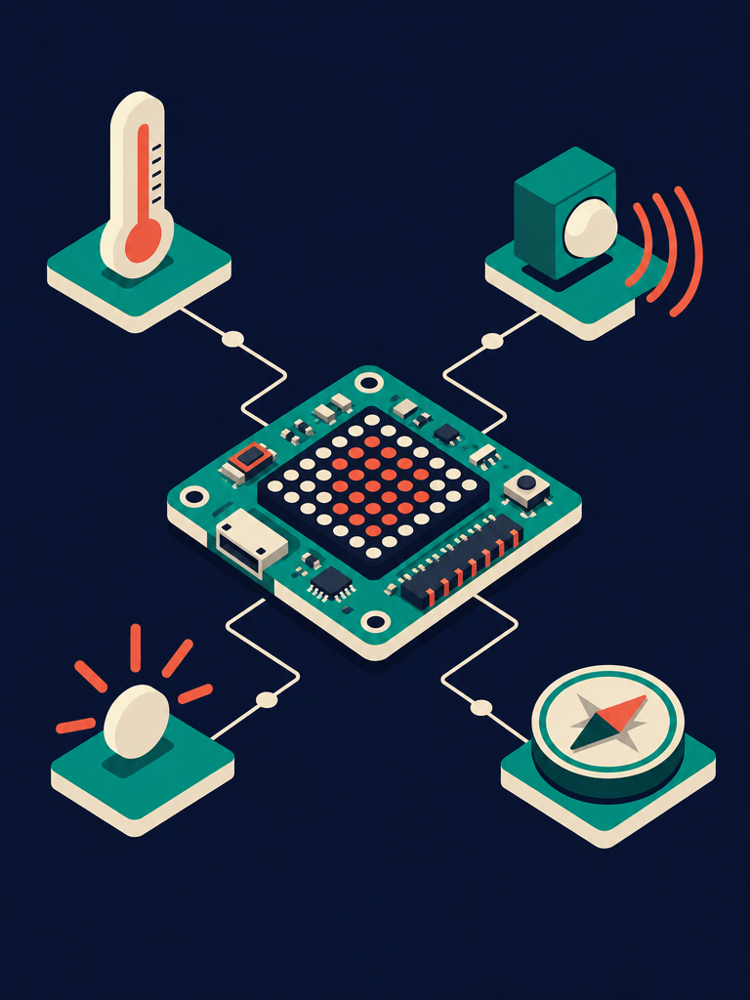
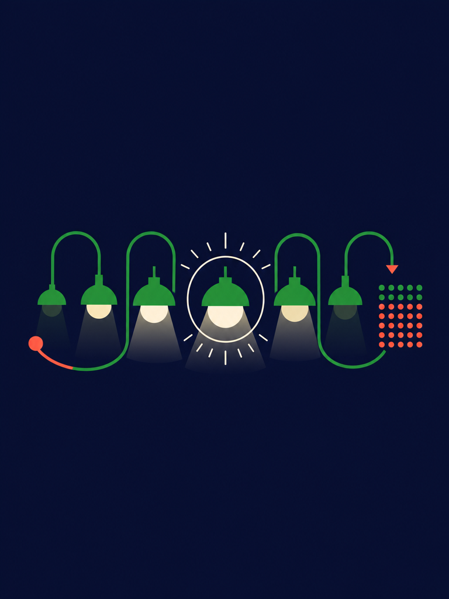

Programming, data and digital systems
for curious minds. Ages 11–14.
Student’s Book · Cambridge Lower Secondary · Ages 11–14
Published by
Prime Books, the publishing imprint of Prime School.
Cascais, Portugal.
primeschool.pt
Edition
First edition, published 2026.
Impression 1.
Copyright
© Prime School 2026. All rights reserved.
No part of this publication may be reproduced, stored in a retrieval system or transmitted in any form or by any means, electronic, mechanical, photocopying, recording or otherwise, without the prior written permission of the publisher. Pages marked as photocopiable may be duplicated by the purchasing institution for classroom use only.
Editorial team
Written and edited by the Prime School Computing & Robotics faculty. Design, typesetting and illustration by the Prime Books studio.
Independent publication
This is an independent publication produced by Prime School for use within its own programmes of study. It is not affiliated with, licensed by, endorsed by or otherwise approved by Cambridge University Press & Assessment or by Cambridge Assessment International Education.
References to the Cambridge Lower Secondary Computing curriculum framework represent the interpretation of the authors and may not fully reflect the approach of Cambridge Assessment International Education. Schools should always consult the current published framework and use a range of teaching resources based on their own professional judgement.
Trademarks
Cambridge Lower Secondary is a trademark of Cambridge University Press & Assessment. Python is a trademark of the Python Software Foundation. micro:bit and the micro:bit logo are trademarks of the Micro:bit Educational Foundation. Microsoft, Excel and Access are trademarks of Microsoft Corporation. Scratch is a trademark of the Scratch Team at the MIT Media Lab. All trademarks are the property of their respective owners and are used here for identification and educational purposes only.
Third-party websites
Web addresses were correct at the time of going to press. Prime School accepts no responsibility for the content of external websites, nor are such sites endorsed by Prime School.
Safety and safeguarding
Practical tasks in this book have been checked for foreseeable hazards. Schools remain responsible for their own risk assessments and for supervising pupils online.
Language
This book is written in British English.
Somebody had to write the software in your pocket. This year, that somebody starts to be you.
Computing is the study of how machines store information, how they process it, and how people and machines work together. It is a young subject, and an unusually practical one. Almost everything you learn in this book can be tried out within minutes of reading about it.
You already live surrounded by computing. The card reader on the 15E tram, the app that tells you when the next ferry leaves Cais do Sodré, the model that predicts whether the swell at Guincho will be worth the bus ride: each one is a program that somebody designed, wrote, tested and improved.
This book will show you how that is done, and then ask you to do it yourself.
Across six units you will build a foundation in four connected areas.
Every unit opens with a real situation and closes with a project that solves it. In between, short bursts of explanation alternate with things for you to try. You are not expected to read a unit straight through: keep a computer beside you and stop often.
The habits matter as much as the knowledge. Plan before you type. Name things clearly. Test with values chosen to break your own work. When something fails, read the error message properly before changing anything. These habits are what separate a programmer from somebody who merely knows some Python.
Your programs will not work the first time. This is not a sign that you are bad at computing: it is what computing actually looks like, for everybody, permanently. Professional engineers spend far more time reading errors and fixing faults than they spend writing new lines.
Treat every bug as a small puzzle with a guaranteed solution, because that is exactly what it is.
The word bug for a computer fault was popularised in 1947, when engineers working on the Harvard Mark II found a moth caught in a relay. They taped the moth into the logbook and noted that they had been "debugging" the machine. The logbook, moth included, still survives.
Prime School · Computing & Robotics faculty
Cascais, 2026
Every unit uses the same set of features. Once you recognise them, you can navigate any page at a glance.
Opens the unit with a real situation, usually somewhere in Portugal, and the questions it raises. Discuss these before reading on.
A short puzzle to wake up the right part of your brain. No computer needed, and no marks at stake.
Connects the new unit to what you already learned in earlier years. Read it even if you feel confident.
The explanation itself, with worked examples, tables and code. Terms printed in bold are defined in the keyword strips and in the glossary.
Tasks to try immediately after reading. Attempt every one: skipping practice is the fastest way to fall behind in computing.
A piece of history or an odd fact. Not examined, but the sort of thing worth knowing.
An extra idea beyond the core material, for when you have finished and want more.
A harder problem that pulls several ideas together. Expect to need more than one attempt.
Definitions of the important terms, right where you meet them. All of them reappear in the glossary at the back.
A full page at the end of each unit: a brief, numbered milestones, a worked example to check against, and the marking grid your teacher will use.
A traffic-light grid. Colour green if you could teach it, amber if you need your notes, red if you want another look.
A checklist of everything the unit covered. Tick each box only when you genuinely can do it.
Code blocks
Dark panels show Python exactly as you should type it. Comments begin with #.
Output panels
Dashed panels show what appears on screen when that code runs. Compare yours against them.
Flowcharts
Rounded box = start or stop. Slanted box = input or output. Rectangle = process. Diamond = decision.
Everything you need for this book is free. Work through this page once, at the start of the year, and you will not have to think about it again.
Go to python.org, choose Downloads, and take the latest version 3 release for your operating system.
You should see a window with the >>> prompt. Type the line below and press Enter.
print("Prime School, ready")
If that worked, Python is installed correctly.
Make one folder for the whole year, with a subfolder for each unit. Save every program inside it.
File names should use lower case letters, digits and underscores only, and must end in .py. Never put a space or an accented character in a Python file name.
The BBC micro:bit is a small circuit board with buttons, lights and sensors built in. You will program it in Python from your browser at python.microbit.org, so nothing needs installing.
Always unplug the micro:bit by ejecting the drive first, exactly as you would with a memory stick.

In this unit you will learn to:
Have you ever wondered what a vending machine is really thinking?
Find the drinks machine in the school hall, or picture one you have used. Talk about these questions with the person next to you.
A vending machine is a computer program wearing a metal coat. It waits for input, stores what it is given, performs a calculation, then produces output. It only feels reliable because somebody tested it very thoroughly before it was bolted to the wall.
In this unit you will move from the coloured blocks of Scratch to text-based programming in Python. You will write programs that ask questions, remember answers, do sums with them and make decisions, and you will learn how to prove that your programs are right.
text-based programming writing a program by typing instructions as words and symbols rather than dragging ready-made blocks
Python a widely used text-based programming language, popular in schools, science and industry
Gonçalo has written a shopping list for a school picnic at Praia do Guincho. Sort each item into one of three groups: a whole number, a number with a decimal part, or text.
Now answer this. Item 6 contains digits, so why can it never be stored as a number?
In Year 6 you built projects in Scratch. You already know more than you think.
Python has all four of these ideas. The difference is that you type them instead of dragging them.
Scratch is a block-based language. Every instruction is a shape you drag into place, and shapes that would not make sense simply refuse to click together. That is a friendly way to start, because the language stops you making many mistakes.
Python is a text-based language. You type each instruction as a line of text. Nothing stops you typing something impossible, so you have to be precise. In return you get speed, power and a language used by real engineers.
Imagine a program that greets a pupil by name. In Scratch you would drag an ask block, then a say block. In Python it is two typed lines.
name = input("What is your name? ") print("Bom dia, " + name + "!")
Both versions do exactly the same job. The Python version is shorter to write once you can type it, and it fits on a single line of a printed page.
| Idea | In Scratch | In Python |
|---|---|---|
| Show something | say Hello | print("Hello") |
| Ask a question | ask What is your name? and wait | input("What is your name? ") |
| Store a value | set score to 0 | score = 0 |
| Add to a value | change score by 1 | score = score + 1 |
| Make a choice | if ... then ... else | if ...: ... else: ... |
Python was released in 1991 by Guido van Rossum, a Dutch programmer. He named it after the television comedy Monty Python's Flying Circus, not after the snake. The snake logo arrived later, because a snake is much easier to draw than a comedy sketch.
Work with a partner.
Python usually arrives with a small program called IDLE, which stands for Integrated Development and Learning Environment. IDLE gives you two ways to work, and knowing which one you are in saves a great deal of confusion.
The shell runs one line at a time and answers immediately. You will recognise it by the three arrows, >>>, called the prompt. The shell is perfect for trying an idea.
The shell forgets nothing while it is open, but it saves nothing when it closes. It is a workbench, not a filing cabinet.
Script mode is a plain editor window. You type a whole program, save it as a file ending in .py, then run the lot in one go. Every program you hand in will be written this way.
To create, save and run a program:
fare.py.Python cares about capital letters. print is a command; Print is not. This single detail causes more first-week errors than anything else.
Anything after a # is a comment. Python ignores it completely, so comments are for the humans who read your work, including you in three weeks' time.
# Ferry timetable helper # Inês, Year 7, Prime School crossings = 14 # sailings each weekday print(crossings)
IDLE the editor and shell that comes with Python
shell a window that runs one instruction at a time and shows the result straight away
script mode writing a complete program in a file so it can be saved and run again
comment a note in the code, starting with #, that Python ignores
48 * 27 without touching a calculator app.hello.py, and make it print two lines: a greeting and today's date as text.hello.py giving your name and the date.print with a capital P, run the file, and write down the exact error message you see.A variable is a named box in memory. You put a value in it, and afterwards you can use the name instead of the value. When the value needs to change, you change it in one place.
The = sign does not mean "equals" in the mathematical sense. It means "put the value on the right into the name on the left".
# Tram 28 fare calculator passengers = 4 fare = 3.20 total = passengers * fare print("Total fare:", total)
Four passengers at €3.20 each comes to €12.80. Python displays 12.8 because a trailing zero adds nothing to the value of a number. You will learn to format money properly later in the unit.
fare beats f, and total_cost beats x.fare and Fare are two different variables.| Name | Allowed? | Why |
|---|---|---|
ticket_price | Yes | clear, lower case, underscore |
2ndPrice | No | begins with a digit |
total cost | No | contains a space |
preço | No | contains an accented character |
n | Yes, but poor | legal yet tells the reader nothing |
A variable holds one value at a time. Assigning again replaces what was there.
lisbon_temp = 18 print(lisbon_temp) lisbon_temp = 24 print(lisbon_temp)
variable a named place in memory that holds a value which can change while the program runs
assignment using = to put a value into a variable
distance = distance + 2 is not nonsense, even though it would be in maths.bus_number, 3rd_place, Total, mean value, _countA program that always does exactly the same thing is not much use. Input lets the user supply the values; output shows the result.
print() sends text to the screen. You can pass it several items separated by commas, and Python puts a single space between them.
name = "Rodrigo" house = "Atlântico" print("Pupil:", name, "House:", house)
input() shows a message, waits for the user to type something and press Enter, then hands back what was typed.
city = input("Which city do you live in? ") print("There is a lot to explore in " + city + ".")
Notice the space at the end of "Which city do you live in? ". Without it the user's typing would begin immediately after the question mark, which looks careless.
input() always gives you text, even when the user types digits. Adding two pieces of text joins them end to end instead of adding them up.
a = input("First number: ") b = input("Second number: ") print(a + b)
Python did exactly what was asked: it joined the text "20" to the text "22". Topic 6 shows how to fix this properly.
input data given to a program by the user or by a sensor
output information the program sends out, usually to the screen
concatenation joining two pieces of text end to end with +
Route 28 runs to Campo Ourique. with the route number the user typed.x = input("Type 5: ") y = input("Type 3: ") print(x + y)
8.Every value in Python has a data type. The type decides what the value means and what you are allowed to do with it.
| Data type | Python name | Examples | Typical use |
|---|---|---|---|
| String | str | "Sintra", "42-BC-19", "7" | names, codes, anything typed |
| Integer | int | 28, 0, -6 | counts of whole things |
| Real | float | 3.20, -0.5, 19.75 | money, measurements, averages |
| Boolean | bool | True, False | answers to yes or no questions |
Strings are always written inside quotation marks. Single and double quotes both work, as long as you use the same one at each end.
The type() command reports the data type of any value.
print(type(28)) print(type(3.20)) print(type("Sintra")) print(type(True))
14 is a count, so use an integer.2750-642 contains a hyphen, so it must be a string.19.4 degrees has a decimal part, so use a real number.Computers store real numbers as approximations, which is why 0.1 + 0.2 prints 0.30000000000000004 in Python. It is not a bug in Python: it is the price of squeezing an infinite number line into a fixed amount of memory. For money, careful programmers work in whole cents.
data type the kind of value being stored, such as string, integer, real or Boolean
string a sequence of characters treated as text
integer a whole number, positive, negative or zero
real a number with a decimal part, called a float in Python
Boolean a value that is either True or False
type() in the shell to check three values of your own choosing.Casting converts a value from one data type to another. It is the cure for the input trap you met in Topic 4.
| Command | What it does | Example | Result |
|---|---|---|---|
int(x) | turns x into a whole number | int("20") | 20 |
float(x) | turns x into a real number | float("3.5") | 3.5 |
str(x) | turns x into text | str(42) | "42" |
Wrap input() in int() and Python converts the text before storing it.
a = int(input("First number: ")) b = int(input("Second number: ")) print("Total:", a + b)
To join a number onto a string with +, the number must first become text.
goals = 7 print("Leonor scored " + str(goals) + " goals.")
Using commas in print() avoids the need to cast at all, because print converts each item for you.
goals = 7 print("Leonor scored", goals, "goals.")
int() can only convert text that really is a whole number.
casting converting a value from one data type to another, for example int("20")
n pastéis de nata at €1.20 each. Ask for n, then print the total cost.int("4.8") does, then try it and explain the result.print("Age: " + age) so it works when age holds the integer 12.Python uses familiar symbols for arithmetic, plus three that may be new.
| Operator | Meaning | Example | Result |
|---|---|---|---|
+ | add | 9 + 4 | 13 |
- | subtract | 9 - 4 | 5 |
* | multiply | 9 * 4 | 36 |
/ | divide | 9 / 4 | 2.25 |
// | integer division, whole part only | 9 // 4 | 2 |
% | modulus, the remainder | 9 % 4 | 1 |
** | raise to a power | 9 ** 2 | 81 |
/ always produces a real number, even when the division is exact. 10 / 2 gives 5.0, not 5.
// and % are so usefulTogether they answer the question "how many whole groups, and how many left over?".
# Seating pupils in minibuses pupils = 47 seats = 8 buses = pupils // seats spare = pupils % seats print("Full minibuses:", buses) print("Pupils in the last bus:", spare)
Check the arithmetic: 5 full minibuses carry 40 pupils, leaving 7. A sixth vehicle is still needed for those 7, which is exactly the kind of detail a good programmer notices.
Python follows the usual order of operations: Brackets, Indices, Division and Multiplication, then Addition and Subtraction.
| Calculation | Result | Reason |
|---|---|---|
4 + 3 * 5 | 19 | multiplication happens before addition |
(4 + 3) * 5 | 35 | brackets force the addition first |
20 - 6 / 3 | 18.0 | division first, then subtraction |
2 ** 3 + 1 | 9 | the index is evaluated first |
(8 + 4) / (5 - 2) | 4.0 | both brackets first, then divide |
Use brackets whenever they make your intention clearer, even where BIDMAS would already give the right answer. Code is read far more often than it is written.
The % operator is how a program knows whether a number is even. If n % 2 gives 0, the number divides exactly by two. Programmers use the same trick to work out whether a year is a leap year, and to make a clock roll over from 23:59 to 00:00.
7 + 2 * 6, (7 + 2) * 6, 25 // 4, 25 % 4, 3 ** 4.10 / 2 prints 5.0 while 10 // 2 prints 5.An algorithm is a precise sequence of steps that solves a problem. Before you type a single line of Python, it pays to plan the algorithm. A flowchart is a picture of that plan, and it uses a small set of standard symbols so that any programmer can read it.
| Symbol | Name | Used for |
|---|---|---|
| Rounded box | Terminator | the START and the STOP of the algorithm |
| Parallelogram | Input or output | reading a value in, or displaying one |
| Rectangle | Process | a calculation or an assignment |
| Diamond | Decision | a question with two possible answers |
| Arrow | Flow line | the order in which steps happen |
Each step follows the one before it. This arrangement is called a sequence, and it is the simplest of the three program structures.
algorithm a precise, ordered set of steps that solves a problem
flowchart a diagram that shows an algorithm using standard symbols
sequence program steps carried out one after another in a fixed order
Selection means choosing between two or more paths. In a flowchart it is the diamond; in Python it is the if statement.
| Operator | Meaning | True example |
|---|---|---|
== | is equal to | 7 == 7 |
!= | is not equal to | 7 != 4 |
< | is less than | 4 < 7 |
> | is greater than | 7 > 4 |
<= | is less than or equal to | 7 <= 7 |
>= | is greater than or equal to | 7 >= 4 |
Take great care with = and ==. A single = stores a value; a double == asks a question.
mark = int(input("Enter the test mark: ")) if mark >= 50: print("Pass") else: print("Needs another attempt")
Two details matter enormously.
: opens a block.decoration in Python: it is how the language knows which lines belong together.
elif, short for "else if", adds further questions. Python checks each in turn and runs the first one that is true.
temp = float(input("Water temperature in C: ")) if temp >= 25: print("Warm enough for a long swim") elif temp >= 18: print("Bracing but pleasant") else: print("The Atlantic wins today")
selection choosing between different paths through a program depending on a condition
condition an expression that is either True or False
indentation the spaces at the start of a line that show which block a statement belongs to
Lower Secondary if the age is between 11 and 14 inclusive, and Check the year group otherwise.% operator.if mark = 50: Explain what is wrong and correct it.Every programmer writes bugs. What separates a good programmer from a frustrated one is a calm, systematic way of finding them.
| Type | What happens | Example | How you spot it |
|---|---|---|---|
| Syntax error | Python cannot understand the line, so nothing runs | print("Hello" | an error message appears before the program starts |
| Runtime error | the program starts, then stops part way | int("seven") | a Traceback appears mid-run |
| Logic error | the program runs happily and gives the wrong answer | using + where you meant * | only testing reveals it |
Logic errors are the most dangerous, because the computer never complains.
Read a traceback from the bottom upwards. The last line names the problem, and the line above tells you where to look. Here the variable was created as passengers but used as passenger.
A test plan decides, before you run anything, what you will type in and what should come out. Good plans include three kinds of data.
Here is a test plan for the pass mark program from Topic 9, where the pass mark is 50.
| Test | Type of data | Input | Expected output | Reason |
|---|---|---|---|---|
| 1 | Normal | 63 | Pass | comfortably above the pass mark |
| 2 | Normal | 31 | Needs another attempt | comfortably below |
| 3 | Boundary | 50 | Pass | 50 must count as a pass |
| 4 | Boundary | 49 | Needs another attempt | one below the pass mark |
| 5 | Erroneous | fifty | an error, or a polite message | not a whole number |
Test 3 is the one that catches the classic mistake of writing > when you meant >=.
print() lines to see what your variables actually contain.syntax error a mistake in the rules of the language that stops the program running
runtime error an error that appears while the program is running
logic error a fault that lets the program run but produces the wrong result
test plan a prepared table of inputs and expected outputs used to check a program
debugging finding and correcting errors in a program
length = int(input("Length: ")) width = int(input("Width: ")) area = length + width print("Area:", area)
As programs grow, repeating the same lines becomes tiresome and error-prone. A sub-routine is a named piece of code you write once and call whenever you need it. In Python you create one with def.
def show_fare(people, price): total = people * price print("Fare for", people, "people:", total) show_fare(2, 3.20) show_fare(5, 3.20)
The sub-routine is defined once and used twice. If the fare rules change, you edit one place. In a flowchart a sub-routine is drawn as a rectangle with a double line at each side.
Build a ferry ticket machine for the crossing from Cais do Sodré to Cacilhas.
The rules are these. A single adult ticket costs €1.55. Passengers aged 12 or under, and those aged 65 or over, pay half price. A group of 10 or more passengers receives a further 20 per cent off the whole order, applied after any age reductions.
Your program should ask for the number of passengers, ask for the age of each one, then print the total to the nearest cent.
Prove it works with this test plan.
| Test | Passengers | Ages | Expected total | Working |
|---|---|---|---|---|
| 1 | 2 | 30, 41 | €3.10 | 2 × 1.55 |
| 2 | 3 | 30, 10, 70 | €3.10 | 1.55 + 0.775 + 0.775 |
| 3 | 10 | ten adults | €12.40 | 15.50 less 20 per cent |
The Geography department is taking Year 7 to the Serra da Arrábida. They need a Python program that works out what the trip will cost each pupil, and they need to be certain the figures are right. That program is your job.
Your program must:
Coach: 250 ÷ 25 = 10.00 per pupil. Plus 4.50 entry = 14.50 each. Total 25 × 14.50 = 362.50. No warning, because 14.50 is below 15.00.
| Strand | Secure |
|---|---|
| Algorithm | flowchart uses correct symbols and shows the decision |
| Program | runs without errors and gives correct figures |
| Data types | inputs cast correctly; money handled as a real number |
| Testing | six or more rows including boundary values at €15.00 |
| Clarity | helpful names, useful comments, tidy output |
| Evaluation | honest, specific and suggests real improvements |
Think carefully about your work in this unit. For each statement, colour the circle that matches how confident you feel. Green means you could teach it to somebody else, amber means you can do it with your notes open, and red means you would like to go over it again.
| I can ... | Green | Amber | Red |
|---|---|---|---|
| explain the difference between block-based and text-based programming | |||
| use the IDLE shell and script mode for the right jobs | |||
| create variables with clear names and change their values | |||
| collect input and display well-presented output | |||
| name the four data types and choose the right one | |||
| cast values between types, and explain why input needs casting | |||
use all seven arithmetic operators, including // and % | |||
| apply BIDMAS and use brackets to make my intention clear | |||
| draw a flowchart with the correct standard symbols | |||
| write selection statements using the comparison operators | |||
| tell syntax, runtime and logic errors apart | |||
| write a test plan with normal, boundary and erroneous data |
+ - * / // % **if, elif and elsedef
In this unit you will learn to:
A greenhouse in the Alentejo waters itself at four in the morning. Nobody is awake. How does it decide?
Think about a device that acts without being told each time. Discuss with a partner.
Any device like this follows the same three-step loop: sense, decide, act. A sensor turns something physical into a number. A program compares that number against a rule. An output does something about it.
In this unit you will build such devices yourself using the BBC micro:bit. Before that, you will learn the single most useful skill in computing: taking a problem that feels too big and cutting it into parts small enough to solve.
decomposition breaking a large problem into smaller problems that can each be solved separately
sensor a component that measures something physical and reports it as a number
embedded system a computer built into a device to control it, rather than a general-purpose computer
Beatriz wants a device that reminds her to drink water during the school day.
Unit 7.1 gave you everything you need to start.
temp = 21int("21")if temp > 25:The only new idea in this unit is that the numbers now come from the physical world instead of from a keyboard.
Software falls into two families, and the difference explains what happens when things go wrong.
Systems software runs the machine. Application software does a job for you.
| Systems software | Application software | |
|---|---|---|
| Purpose | operates and maintains the computer | completes a task for the user |
| Started by | the machine, automatically | the user, deliberately |
| Examples | operating system, drivers, utilities | browser, spreadsheet, IDLE, games |
| If it fails | the whole machine may stop | usually just that program stops |
The micro:bit has no operating system in the ordinary sense. It runs a small piece of systems software called firmware, which starts the board and then hands control to your program. This arrangement is called an embedded system: a computer built into a device to control it.
Embedded systems are everywhere. A washing machine, a car's braking system, a traffic light and a heart monitor all contain one. They usually do a single job, run the same program for years, and must never crash.
There are far more embedded computers in the world than laptops and phones combined. A modern car contains somewhere between fifty and a hundred separate processors, controlling everything from the engine timing to the windows. Most of them run software that will never be updated once the car leaves the factory.
Decomposition means breaking a problem into smaller problems. It is the most useful habit in computing, because a small problem can be solved, tested and understood, while a large one cannot.
Gonçalo wants a light that switches on by itself when it gets dark and flashes when he brakes. Written like that, it is one intimidating problem. Decomposed, it becomes five easy ones.
| Part | The smaller problem | Solved by |
|---|---|---|
| 1 | Measure how bright it is | read the light sensor |
| 2 | Decide whether that counts as dark | compare against a threshold |
| 3 | Turn the light on or off | write to the display |
| 4 | Detect braking | read the accelerometer |
| 5 | Flash while braking | a loop with pauses |
Each row can be built and tested on its own. When all five work, joining them is straightforward.
decomposition breaking a problem into smaller sub-problems
threshold a value used as the dividing line in a decision
firmware systems software stored permanently in a device to start and control it
The BBC micro:bit is a small board with a 5 by 5 grid of red LEDs, two buttons, and sensors for temperature, light and movement, all built in.
You write micro:bit Python in a browser editor, then send the finished program to the board.
Every micro:bit program begins with the same line, which brings in all the commands for the display, buttons and sensors.
from microbit import * display.scroll("Ola!")
The board scrolls the message across the LED grid once, then stops.
| Command | What it does |
|---|---|
display.scroll("text") | slides text across the grid |
display.show(Image.HEART) | shows a built-in picture |
display.show(7) | shows a single character or digit |
display.clear() | turns every LED off |
display.set_pixel(x, y, b) | sets one LED, brightness b from 0 to 9 |
The grid is numbered from 0, with x running left to right and y running top to bottom. The centre LED is therefore (2, 2), not (3, 3).
from microbit import * display.clear() display.set_pixel(0, 0, 9) display.set_pixel(2, 2, 5) display.set_pixel(4, 4, 9)
This lights the top left corner brightly, the centre at half brightness, and the bottom right corner brightly.
sleep(ms) pauses the program for a number of milliseconds. while True: repeats for ever, which is exactly what an embedded device usually needs to do.
from microbit import * while True: display.show(Image.HEART) sleep(500) display.clear() sleep(500)
The heart flashes on for half a second, off for half a second, until the board is unplugged.
LED a small light, twenty-five of which form the micro:bit display
millisecond one thousandth of a second, the unit used by sleep()
infinite loop a loop such as while True: that repeats until the device is switched off
(2, 2) rather than (3, 3).A button gives your program its first real input from the outside world.
| Command | What it reports |
|---|---|
button_a.is_pressed() | True while button A is held down |
button_b.is_pressed() | True while button B is held down |
button_a.was_pressed() | True once if A has been pressed since you last asked |
is_pressed() asks about right now. was_pressed() remembers a press that has already finished, which is far more useful for counting things.
from microbit import * count = 0 while True: if button_a.was_pressed(): count = count + 1 display.show(count) if button_b.was_pressed(): count = 0 display.show(Image.NO) sleep(500) display.clear()
Button A adds one to the count and shows it. Button B resets the count to zero, shows a cross for half a second, then clears the display.
Notice that count is created before the loop. Putting it inside would reset it to zero on every pass, and the counter would never climb above one.
display.show(count) can only show one character at a time, so a count of 12 appears as a 1 followed by a 2, which is easy to misread. Use display.scroll(count) once the count passes nine, and the number slides across clearly.
if count > 9: display.scroll(count) else: display.show(count)
A when button A is held and B when button B is held.count = 0 were written inside the while True: loop.A sensor turns something physical into a number your program can compare.
| Sensor | Command | Returns |
|---|---|---|
| Temperature | temperature() | degrees Celsius, a whole number |
| Light | display.read_light_level() | 0 (dark) to 255 (bright) |
| Movement | accelerometer.get_x() | roughly −1024 to 1024 |
| Gesture | accelerometer.was_gesture("shake") | True if shaken |
from microbit import * while True: temp = temperature() if temp >= 26: display.show(Image.ANGRY) elif temp <= 17: display.show(Image.ASLEEP) else: display.show(Image.HAPPY) sleep(2000)
The board checks the temperature every two seconds and shows a face for hot, cold or comfortable.
A threshold should come from measurement, not from a guess. To set the dark threshold for Gonçalo's bicycle light, record real readings first.
| Situation | Light reading | Conclusion |
|---|---|---|
| Bright sunshine outdoors | 245 | clearly daylight |
| Overcast afternoon | 160 | still daylight |
| Classroom with lights on | 95 | indoors, lamp needed |
| Dusk outdoors | 40 | light should switch on |
| Covered with a hand | 2 | dark |
A threshold of 50 sits comfortably between dusk and the lit classroom, so the light comes on at dusk without flickering on indoors.
| Reading | Sensible type | Why |
|---|---|---|
| Temperature in whole degrees | integer | the sensor reports whole numbers |
| A calculated average temperature | real | dividing produces a decimal |
| Light level | integer | always a whole number from 0 to 255 |
| Is it dark? | Boolean | the answer is yes or no |
The micro:bit has no separate light sensor. It measures light using the LEDs of the display itself, run briefly in reverse. An LED that normally emits light will generate a tiny current when light falls on it, and the board measures that current. This is why the reading changes if you cover the display with your thumb.
A flowchart shows the algorithm before you type it. Planning first is quicker overall, because mistakes are far cheaper to fix in a diagram than in code.
Turning that diagram into code is now mechanical.
from microbit import * while True: level = display.read_light_level() if level < 50: display.show(Image.SQUARE) else: display.clear() sleep(1000)
A flowchart is also a debugging tool. When a program misbehaves, draw what it actually does and compare it against what it should do. The difference is almost always visible.
Inês wrote a program to warn when a greenhouse is too cold. It never warns, even at 5 degrees.
from microbit import * while True: temp = temperature() if temp > 10: display.show(Image.SAD) sleep(1000)
Tracing the diamond makes the fault obvious. Her condition asks whether the temperature is above 10, so the warning appears when the greenhouse is warm and stays hidden when it is cold. The comparison operator is the wrong way round, and it should be temp < 10.
This is a logic error: the program runs perfectly and produces the wrong answer.
Testing a device that senses the real world needs more care than testing a calculator, because you cannot always type the value you want to test.
Here is a test plan for the greenhouse warning, where the alert should appear below 10 degrees.
| Test | Type | Input | Expected | How to produce it |
|---|---|---|---|---|
| 1 | Normal | 21 °C | no warning | ordinary room |
| 2 | Normal | 4 °C | warning | put the board in a fridge |
| 3 | Boundary | 10 °C | no warning | 10 is not below 10 |
| 4 | Boundary | 9 °C | warning | one degree below |
| 5 | Erroneous | sensor disconnected | no crash | unplug and observe |
Rows 3 and 4 matter most. They are the only tests that catch the difference between < and <=, which is the single most common mistake in this kind of program.
You cannot always reach a boundary value in the real world. The professional answer is to test the decision separately from the sensor, by writing the rule as a function and calling it with any value you like.
def is_too_cold(temp): return temp < 10 print(is_too_cold(21)) print(is_too_cold(10)) print(is_too_cold(9)) print(is_too_cold(4))
Every boundary is now testable in a second, with no fridge required. Once the function is proved correct, the device simply calls it with the real reading.
normal data typical values the program will usually meet
boundary data values at the very edge of a decision, where behaviour changes
erroneous data values that should be rejected or handled safely
logic error a fault that lets the program run but produces the wrong result
is_too_bright(level) returning True above 200, and test the boundaries 199, 200 and 201.Evaluation means judging honestly whether the finished thing solves the original problem. It is not a summary of what you did, and it is not an apology.
> "I made the bike light and it works well. I like it. If I had more time I would make it better."
That says nothing checkable. Compare it with this.
> "The light meets three of the four requirements. It switches on below a reading of 50, proved > by tests 3 and 4, and it flashes when braking, proved by test 6. It does not meet the > requirement to stay off in a lit garage, because a garage reads 55 and the threshold is too > close. I would raise the threshold to 35 and re-run tests 3 to 5. The battery lasts about six > hours, which is short for a winter week, so I would also increase the sleep between readings > from 100 ms to 500 ms."
The second is specific, references evidence, admits a failure and proposes a measurable fix.
Any claim in an evaluation should be measurable. "It is slow" is an opinion; "it takes 1.4 seconds to react, and it should react within 0.5 seconds" is a fact that tells you what to fix and lets you prove you fixed it.
Build a frost alarm for the Douro vineyards.
Vines are damaged when the temperature drops to 2 °C or below. Growers need warning before the temperature actually reaches freezing.
Your device must:
Notice that the three bands must cover every possible temperature with no gaps and no overlaps. Check the edges carefully: a reading of 2.9 °C has to land in exactly one band.
Write the decision as a function frost_state(temp) returning the text "safe", "watch" or "alarm", then prove it with this plan.
| Test | Temperature | Expected | Why |
|---|---|---|---|
| 1 | 12 | safe | comfortably warm |
| 2 | 5.1 | safe | just above the watch band |
| 3 | 5 | watch | exactly on the upper edge |
| 4 | 3 | watch | inside the band |
| 5 | 2.9 | watch | just above the alarm edge |
| 6 | 2 | alarm | exactly on the alarm edge |
| 7 | −4 | alarm | hard frost |
Choose one real problem in your school and solve it with a micro:bit. The device must sense something, decide something, and act on that decision. You will be judged as much on your planning and testing as on the finished program.
from microbit import * # The decision, kept separate so # it can be tested on its own. def state(reading): if reading < 50: return "on" return "off" while True: level = display.read_light_level() if state(level) == "on": display.show(Image.SQUARE) else: display.clear() sleep(1000)
| Strand | Secure |
|---|---|
| Decomposition | four or more sensible parts, inputs and outputs identified |
| Algorithm | flowchart uses correct symbols and matches the code |
| Threshold | chosen from real recorded readings, and justified |
| Program | runs on the board and behaves as planned |
| Testing | six or more rows, boundaries included, real results recorded |
| Evaluation | specific, evidenced, admits a weakness, proposes a measurable fix |
Think carefully about your work in this unit. For each statement, colour the circle that matches how confident you feel. Green means you could teach it to somebody else, amber means you can do it with your notes open, and red means you would like to go over it again.
| I can ... | Green | Amber | Red |
|---|---|---|---|
| explain the difference between systems and application software | |||
| describe what an embedded system is and give examples | |||
| decompose a large problem into smaller solvable parts | |||
| write a micro:bit program and transfer it to the board | |||
| control the display, including individual pixels | |||
| respond to button presses, and know when to use was_pressed | |||
| read the temperature, light and accelerometer sensors | |||
| choose a threshold from real recorded readings | |||
| select sensible data types for sensor values | |||
| plan an algorithm as a flowchart before coding | |||
| use a flowchart to locate a logic error | |||
| build a test plan with normal, boundary and erroneous data | |||
| write an honest, specific and evidenced evaluation |
In this unit you will learn to:
You type six letters and press Enter. Somewhere, a machine you will never see answers you in less time than a blink.
Think about what happens when you load a page. Discuss with a partner.
The honest answer is that a request leaves your device, crosses a chain of machines that may include a fibre cable on the floor of the Atlantic, finds one specific computer among billions, and comes back. All of it happens in well under a second.
In this unit you will follow that journey step by step. You will also learn how to travel it safely, because the same network that delivers a library delivers people who would like your password.
internet the global network of connected networks that carries data between devices
World Wide Web the collection of linked pages and files that travels over the internet
server a computer that stores information and sends it out when another computer asks
Put these in the order they happen when Beatriz loads a web page. One is a distractor and does not belong at all.
Now answer this: which step would fail first if the school's internet connection were unplugged?
You already know more than you expect.
This unit adds one idea: those bits can travel, and the journey has rules.
The internet is a network of networks. No single company owns it. It is millions of separate networks that have agreed to pass each other's data using shared rules called protocols.
The World Wide Web is not the same thing. The web is one service that runs on the internet, made of pages and links. Email, video calls and app updates also use the internet but are not part of the web. The internet is the road; the web is one kind of traffic.
Large files are not sent in one piece. They are chopped into small packets, each carrying the destination address and its position in the sequence. Packets may take different routes and arrive out of order, and the receiving device puts them back in the right order.
This sounds fussy but it is why the internet is so robust. If one route fails, packets simply go another way, and nothing needs to start again from the beginning.
About 99 per cent of international internet traffic travels through undersea fibre optic cables, not satellites. Portugal is a major landing point: cables from Brazil, west Africa and North America come ashore near Lisbon and in the Algarve. Some of those cables are barely thicker than a garden hose, and they carry the traffic of entire continents.
protocol an agreed set of rules that lets different systems communicate
router a device that directs data between networks and to the correct device
ISP Internet Service Provider, the company connecting you to the internet
packet a small block of data with an address, part of a larger transmission
Data travels as electrical signals along copper, as pulses of light along glass, or as radio waves through the air.
| Method | Carries data as | Typical use | Strengths | Weaknesses |
|---|---|---|---|---|
| Copper cable | electrical signals | office and school wiring | cheap, reliable, no interference from walls | signal fades over distance, slower than fibre |
| Fibre optic | pulses of light in glass | backbone, undersea, modern homes | very fast, very long distances, immune to electrical interference | costly to install, fragile if bent sharply |
| Wireless (Wi-Fi) | radio waves | laptops and phones in a building | no cables, easy to move about | walls weaken it, shared between users, easier to intercept |
| Mobile (4G, 5G) | radio waves to masts | phones out and about | works almost anywhere | depends on signal strength, data may be charged |
In copper, the signal is a changing voltage that weakens as it travels and picks up interference from nearby electrical equipment. In fibre, the signal is light bouncing along a glass strand thinner than a hair. Light loses very little energy over distance and is completely unaffected by electrical noise, so a fibre can carry far more data, far further, with fewer repeaters.
Three measurements describe a connection. People confuse them constantly, so learn the difference properly.
A useful picture: bandwidth is how many lanes the motorway has, latency is how long the journey takes, and bit rate is how fast the traffic is genuinely moving today.
Connection speeds are quoted in megabits per second (Mbps). File sizes are given in megabytes (MB). One byte is eight bits, so:
time in seconds = file size in MB × 8 ÷ speed in Mbps
Forgetting the 8 makes every answer eight times too optimistic, which is why downloads always feel slower than advertised.
Gonçalo downloads a 600 MB documentary about the Douro on a 50 Mbps connection.
On the school's older 10 Mbps line the same file takes 4800 ÷ 10 = 480 seconds, which is 8 minutes exactly.
| File | Speed | Working | Time |
|---|---|---|---|
| 150 MB | 20 Mbps | 150 × 8 ÷ 20 | 60 s |
| 600 MB | 50 Mbps | 600 × 8 ÷ 50 | 96 s |
| 2000 MB | 100 Mbps | 2000 × 8 ÷ 100 | 160 s |
| 4500 MB | 200 Mbps | 4500 × 8 ÷ 200 | 180 s |
A satellite link can have enormous bandwidth and still feel dreadful, because the signal must travel to orbit and back. Round trip times of roughly 600 ms make a video call painful even though large files transfer quickly.
| Route | Typical round trip |
|---|---|
| Within Lisbon | about 8 ms |
| Lisbon to London | about 40 ms |
| Lisbon to Sydney | about 320 ms |
| Via geostationary satellite | about 600 ms |
For a video call or an online game, latency matters more than bandwidth. For downloading a large file, bandwidth matters more than latency.
bandwidth the maximum amount of data a connection can carry each second
latency the delay before data begins to arrive, measured as a round trip in milliseconds
bit rate the rate at which data is actually transferred at a given moment
Mbps megabits per second, the usual unit of connection speed
Every device on a network needs a unique IP address, so data can be delivered to it and to nothing else. It is the equivalent of a postal address.
An IPv4 address is four numbers separated by full stops, such as 192.0.2.146. Each number is one octet, stored in 8 bits, so it can be anything from 0 to 255.
Four octets of 8 bits gives 32 bits in total, which allows 232 addresses, about 4.29 billion. That sounded limitless in the 1980s. With phones, laptops, televisions, watches and doorbells all online, it ran out.
IPv6 uses 128 bits, written as eight groups of hexadecimal digits, such as 2001:0db8:85a3:0000:0000:8a2e:0370:7334. That gives 2128 addresses, a number with 39 digits. It is comfortably enough to give every grain of sand on Earth many addresses of its own.
| IPv4 | IPv6 | |
|---|---|---|
| Size | 32 bits | 128 bits |
| Written as | four numbers 0 to 255 | eight groups of hexadecimal |
| Total addresses | about 4.29 billion | about 3.4 × 1038 |
| Example | 192.0.2.146 | 2001:db8::7334 |
A static address never changes and suits a server, which must always be findable at the same place. A dynamic address is handed out temporarily by the router when a device joins and may differ tomorrow. Most home and school devices are dynamic, which conserves addresses.
IP address a unique number identifying a device on a network
octet one of the four numbers in an IPv4 address, from 0 to 255
static address an IP address that stays the same
dynamic address an IP address assigned temporarily when a device joins a network
192.0.2.300 cannot be a valid IPv4 address.A URL, or Uniform Resource Locator, is the full address of one particular resource on the web. Every part of it does a job.
Consider https://www.primeschool.pt/computing/year7.html
| Part | Example | What it does |
|---|---|---|
| Protocol | https:// | the rules used, here secure web traffic |
| Subdomain | www. | which section of the domain to use |
| Domain name | primeschool.pt | the registered name of the organisation |
| Top-level domain | .pt | the category or country, here Portugal |
| Path | /computing/ | the folder on the server |
| File | year7.html | the specific page requested |
Domains are read right to left. In www.primeschool.pt, the .pt is decided first, then primeschool within it, then www within that. This matters for spotting fraud, as you will see in Topic 8.
Common top-level domains include .pt for Portugal, .uk for the United Kingdom, .org usually for organisations, .edu for education, and .com for commercial use.
https://news.example.org/science/oceans/tides.html into all six parts..pt ending tell you, and what does it not tell you?timetable.html in a folder called pupils on a site called primeschool.pt, using secure protocol.Computers route data using IP addresses, but people remember names. The Domain Name System, or DNS, translates between the two. It is often called the phone book of the internet.
Once your computer learns an address it caches it, storing it for a while. The next visit skips the lookup entirely, which is one reason a site you use daily feels quicker than one you have never opened.
If the DNS cannot find a name, the browser reports that the server could not be found. That usually means a typing mistake in the name, a site that no longer exists, or a problem with the DNS server itself rather than with the website.
The 404 error is different and much more precise. A 404 means DNS worked perfectly, the server was found, and the server is telling you that the particular page you asked for does not exist on it. DNS failure means the building could not be located; 404 means the building is there but that room is not.
DNS the Domain Name System, which translates domain names into IP addresses
cache a temporary store of recently used data, kept to save fetching it again
404 error a message from a web server saying the requested page does not exist
HTTP is the protocol that carries web pages. HTTPS is the same protocol with encryption added. The s stands for secure.
Without HTTPS, data travels as readable text. Anyone able to observe the connection, for instance on an open café network, could read a password as it passes. With HTTPS, the data is scrambled using a key, so an observer sees only meaningless characters.
HTTPS provides three things:
This is the part most people get wrong. The padlock means the connection is secure. It says nothing whatever about whether the website is honest.
A criminal can register a domain, obtain a certificate in minutes, and run a perfectly encrypted fraudulent shop. The padlock guarantees that nobody else is listening while you are being defrauded. It is necessary, but it is nowhere near sufficient.
| The padlock promises | The padlock does not promise |
|---|---|
| your data is encrypted in transit | the company is genuine |
| the certificate matches the domain | the goods exist |
| nobody has altered the page en route | your data will be handled responsibly |
HTTP the protocol used to transfer web pages
HTTPS HTTP with encryption, protecting data in transit
encryption scrambling data so only the intended recipient can read it
certificate a digital document proving a website belongs to the domain it claims
Since the padlock cannot tell you whether a site is honest, you need other checks.
primeschool-pt-login.example.com is not primeschool.pt.Remember that domains are read right to left, and the real domain is the part immediately before the top-level domain.
| Address shown | Real domain | Genuine? |
|---|---|---|
www.primeschool.pt | primeschool.pt | yes |
primeschool.pt.login-secure.example.com | example.com | no |
www.primeschoo1.pt | primeschoo1.pt | no, the l is a digit 1 |
The second row is the classic trick. Everything before example.com is decoration chosen to reassure you.
Phishing is a message pretending to be from someone you trust, designed to make you hand over information. The defence is simple and absolute: never follow a link in an unexpected message. Go to the site yourself by typing the address you already know.
If you think you have been caught, tell an adult immediately and change the password from a different device. Being embarrassed for five minutes is better than losing an account.
secure.bank.pt.verify-account.example.net and say whether it looks genuine.A strong password is long, unique and unguessable. Length matters most: each extra character multiplies the work an attacker must do.
Two-factor authentication, or 2FA, requires a second proof besides the password, usually a code from your phone. It means a stolen password alone is not enough to get in. Switch it on wherever it is offered, especially for email, because email can reset everything else.
| Habit | Why it matters |
|---|---|
| Install updates promptly | most attacks exploit faults that were already fixed |
| Lock your screen when you walk away | physical access defeats most other protections |
| Be careful on public Wi-Fi | others may be able to observe an unencrypted connection |
| Think before you post | information helps attackers guess security answers |
| Check the address before typing a password | the commonest way people are caught |
A password of four random common words is far stronger than a short one full of symbols, because the number of possibilities grows with every character added. Tram!7q is short enough to attack by brute force; sardine-lighthouse-copper-tuesday is not, and you can actually remember it. Modern advice therefore favours long passphrases over unmemorable symbol soup.
A search engine visits pages continuously, stores what it finds in an index, and ranks the results when you ask a question. Learning to ask precisely saves a great deal of time.
| Operator | Example | Effect |
|---|---|---|
"quotes" | "pattern recognition" | finds that exact phrase |
-word | python -snake | excludes results containing that word |
site: | site:gov.pt rainfall | searches only that site |
filetype: | filetype:pdf tram map | finds only that file type |
OR | lisbon OR porto | finds either term |
Finding an answer is easy. Deciding whether to trust it is the real skill.
Never rely on a single source, and be especially careful with an answer that simply confirms what you already hoped was true.
search engine a system that indexes web pages and ranks them against a query
index the search engine's stored record of the pages it has visited
corroboration confirming information by checking an independent second source
Your family is choosing a broadband package for a flat in Cascais. Three are offered.
| Package | Bandwidth | Latency | Monthly cost |
|---|---|---|---|
| Copper Basic | 20 Mbps | 25 ms | €22 |
| Fibre Home | 200 Mbps | 8 ms | €35 |
| Satellite Rural | 100 Mbps | 600 ms | €48 |
Answer all four parts, showing your working.
The school wants a two-page guide helping families choose an internet connection and stay safe online. It must be accurate, genuinely useful, and written so that somebody who has never heard the word bandwidth can follow it.
Your guide must include:
The multiply by 8 is the step everybody forgets. File sizes are in bytes; connection speeds are in bits. Always convert before dividing.
| Strand | Secure |
|---|---|
| Accuracy | every technical statement is correct |
| Calculation | bits and bytes handled correctly, working shown |
| Diagram | DNS process drawn with correct symbols |
| Recommendations | justified using both bandwidth and latency |
| Safety | five rules, each with a real reason |
| Clarity | a non-specialist can follow it without help |
| Sources | research is cited with dates |
Think carefully about your work in this unit. For each statement, colour the circle that matches how confident you feel. Green means you could teach it to somebody else, amber means you can do it with your notes open, and red means you would like to go over it again.
| I can ... | Green | Amber | Red |
|---|---|---|---|
| explain the difference between the internet and the web | |||
| describe the chain from my device to a web server | |||
| explain why data travels in packets | |||
| compare copper, fibre and wireless transmission | |||
| define bandwidth, latency and bit rate, and tell them apart | |||
| calculate a download time, converting bytes to bits | |||
| explain what an IP address is and why IPv6 was needed | |||
| break a URL into its component parts | |||
| describe how DNS finds a web server | |||
| explain what HTTPS protects | |||
| explain what the padlock does not promise | |||
| read a domain from the right and spot a fake | |||
| recognise phishing and respond correctly | |||
| explain why passphrase length beats symbol complexity | |||
| search precisely and judge whether a source is reliable |
In this unit you will learn to:
Should the tuck shop raise the price of a pastel de nata by ten cents?
Nobody can answer that by arguing. You need numbers. Discuss with a partner.
A model is a simplified version of something real, built so you can experiment safely. Change a number, and the model shows the consequences instantly. Nobody loses money while you find out.
In this unit you will build models in spreadsheets, organise information in databases, collect data without letting rubbish in, and present findings so a busy reader grasps them at a glance.
data model a simplified representation of a real situation, built so it can be tested and explored
simulation running a model to see what would happen under particular conditions
what if question changing an input in a model to see the effect on the results
The school runs a trip. The coach costs €250 for the day, and each pupil pays an entry fee of €4.50 on top of their share of the coach.
You have the tools already.
A spreadsheet formula is simply an expression, of the kind you already write in Python, attached to a cell.
A model keeps the parts of a situation that matter and throws away the rest. A weather model ignores the colour of your coat. A tuck shop model ignores which pupil bought which biscuit.
| Benefit | Explanation |
|---|---|
| Safe | test a price rise without losing real money |
| Fast | try twenty possibilities in a minute |
| Cheap | no need to build anything physical |
| Repeatable | run the same scenario again and get the same answer |
| Dangerous situations | model a fire evacuation without a fire |
A model is only as good as its assumptions and its data. It cannot know what it was never told.
Always ask two questions of any model: what has it assumed, and where did the data come from?
Weather forecasting was the first great use of computer modelling. In 1922 Lewis Fry Richardson calculated a single six-hour forecast by hand. It took him six weeks, and the answer was wrong. His method, however, was right, and it is essentially what supercomputers run today, only rather more quickly.
A spreadsheet is a grid of cells. Each cell has an address made of its column letter and row number, such as B4. A cell holds a number, some text, or a formula.
A formula tells the spreadsheet to calculate rather than to display text. Referring to cells rather than typing numbers is the whole point: change the cell, and every formula updates.
| Formula | Meaning |
|---|---|
=B2*C2 | multiply the value in B2 by the value in C2 |
=B2+B3+B4 | add three cells |
=SUM(D2:D6) | add everything from D2 to D6 |
=AVERAGE(D2:D6) | the mean of that range |
=MAX(D2:D6) | the largest value |
=MIN(D2:D6) | the smallest value |
=COUNT(D2:D6) | how many cells hold numbers |
Here is one week of sales. Column D is not typed in: it is calculated by =B2*C2, filled down.
| A: Item | B: Price € | C: Sold | D: Income € | |
|---|---|---|---|---|
| 2 | Pastel de nata | 1.20 | 148 | 177.60 |
| 3 | Water 500 ml | 0.80 | 210 | 168.00 |
| 4 | Fruit bag | 0.95 | 96 | 91.20 |
| 5 | Cheese roll | 1.60 | 132 | 211.20 |
| 6 | Oat biscuit | 0.70 | 174 | 121.80 |
| 7 | Total | 760 | 769.80 |
Check one row by hand: 1.20 × 148 = 177.60. The totals in row 7 use =SUM(C2:C6) and =SUM(D2:D6).
The summary statistics come from the same range.
| Statistic | Formula | Result |
|---|---|---|
| Total income | =SUM(D2:D6) | 769.80 |
| Mean income per line | =AVERAGE(D2:D6) | 153.96 |
| Best-selling line | =MAX(D2:D6) | 211.20 |
| Weakest line | =MIN(D2:D6) | 91.20 |
| Number of lines | =COUNT(D2:D6) | 5 |
Notice something interesting. The cheese roll earns most money, at €211.20, yet water sells most units, at 210. Asking "which sells best" is not one question but two, and a good model answers both.
When you copy =B2*C2 from row 2 down to row 3, it becomes =B3*C3. The references moved with it. That is relative referencing, and it is usually exactly what you want.
Sometimes it is exactly what you do not want. Suppose cell B1 holds the school fund percentage, 15%, and you want each line's contribution.
Writing =D2*B1 in row 2 and copying it down gives =D3*B2 in row 3, which points at the wrong cell and produces nonsense. The fix is a absolute reference: $B$1. The dollar signs lock the column and the row so they never shift.
| Row | Formula =D2*$B$1 copied down | Income | 15% share |
|---|---|---|---|
| 2 | =D2*$B$1 | 177.60 | 26.64 |
| 3 | =D3*$B$1 | 168.00 | 25.20 |
| 4 | =D4*$B$1 | 91.20 | 13.68 |
| 5 | =D5*$B$1 | 211.20 | 31.68 |
| 6 | =D6*$B$1 | 121.80 | 18.27 |
The row number changes, as it should, but $B$1 stays put. Total contribution to the school fund is €115.47, which is 15% of €769.80.
The model now earns its keep. Change the price of a pastel de nata in B2 from 1.20 to 1.30 and every dependent cell updates instantly. If sales stayed at 148, income for that line would rise to €192.40, and the total would become €784.60.
That "if sales stayed the same" is the assumption doing the heavy lifting, and it is precisely the sort of assumption you must state out loud.
cell a single box in a spreadsheet, identified by column letter and row number
formula an instruction beginning with = that calculates a value
relative reference a reference that shifts when the formula is copied, such as B2
absolute reference a reference locked with dollar signs so it never shifts, such as $B$1
range a block of cells written as two corners, such as D2:D6
B9 and the quantity in C9.E2:E20.=A1*B1 is copied from row 1 to row 5, and give the resulting formula.F1. Write a formula for row 3 that can be safely copied down the column.A spreadsheet is excellent for calculating. A database is better for storing large amounts of structured information and asking questions of it.
| Term | Meaning | Example |
|---|---|---|
| Table | a collection of data about one kind of thing | Pupils |
| Record | one row, all the data about one item | one pupil |
| Field | one column, one piece of information | Surname |
| Primary key | a field whose value is unique for every record | PupilID |
| PupilID | Surname | Forename | Year | House |
|---|---|---|---|---|
| P7001 | Almeida | Beatriz | 7 | Atlântico |
| P7002 | Carvalho | Gonçalo | 7 | Tejo |
| P7003 | Dias | Inês | 7 | Atlântico |
| P7004 | Esteves | Tomás | 8 | Serra |
There are four records and five fields. PupilID is the primary key.
Two pupils can share a surname, a forename, a year and a house. If your key were Surname, the database could not tell two Almeidas apart, and updating one might change the other. A primary key guarantees that every record can be identified exactly.
This is also why a primary key should be something that never needs to change. A pupil's surname can change; their PupilID should not.
Choosing types carefully saves space and prevents errors.
| Field | Type | Why |
|---|---|---|
| PupilID | text, 5 characters | contains a letter, so not a number |
| Surname | text, 30 characters | long enough for real names |
| Year | integer | whole number, used for sorting |
| DateOfBirth | date | allows age calculations |
| BusPass | Boolean | yes or no |
Year is a number because you may want to sort or filter by it. PupilID is text even though it contains digits, for the same reason a telephone number is text: you would never do arithmetic with it.
A query asks a question of the data and returns only the matching records.
| Question | Criteria |
|---|---|
| Which pupils are in Year 7? | Year = 7 |
| Who is in Atlântico house? | House = "Atlântico" |
| Year 7 pupils in Atlântico? | Year = 7 AND House = "Atlântico" |
| Anyone in Year 7 or Year 8? | Year = 7 OR Year = 8 |
| Anyone not in Year 7? | Year <> 7 |
Running the third query on the table above returns two records: Beatriz Almeida and Inês Dias.
database an organised collection of structured data
table a set of records about one kind of thing
record one complete entry, shown as a row
field one item of information, shown as a column
primary key a field that uniquely identifies every record
query a request that returns only the records matching stated criteria
Surname would be a poor primary key.A model built on bad data gives confident, precise, wrong answers. Collection is where quality is won or lost.
Validation is an automatic check the computer performs as data is entered. It cannot tell whether data is true, only whether it is possible.
| Check | What it does | Example |
|---|---|---|
| Range | value must fall between limits | Year between 7 and 13 |
| Type | value must be the right data type | Quantity must be a whole number |
| Presence | the field cannot be left empty | Surname is required |
| Format | must match a pattern | postcode as 0000-000 |
| Length | a set number of characters | PupilID exactly 5 characters |
| Lookup | must be chosen from a list | House from a drop-down |
Verification checks that data was entered accurately, usually by comparing two entries.
The difference matters. If Gonçalo's year is typed as 8 instead of 7, validation is perfectly happy, because 8 is a legal year. Only verification catches it.
Programmers have a saying: garbage in, garbage out. A spreadsheet will happily calculate the mean of a column containing a mistyped 5000 that should have been 50, and will report the answer to two decimal places with total confidence. Precision is not the same thing as accuracy. Always look at your data before you trust a statistic drawn from it.
A table of 400 rows hides its meaning. These tools reveal it.
Sorting reorders records by a field, ascending or descending. Sorting the tuck shop data by income descending puts the cheese roll first, immediately showing where the money comes from.
Always sort the whole table, never one column on its own. Sorting a single column detaches it from its row and destroys the data, silently.
Filtering hides records that do not match a condition, without deleting anything. Filter the pupil table to Year = 7 and only Year 7 records show. Remove the filter and everything returns.
Conditional formatting changes a cell's appearance based on its value, so patterns jump out.
| Rule | Effect on the tuck shop data |
|---|---|
| Income greater than 200, green | highlights the cheese roll |
| Income less than 100, red | highlights the fruit bag |
| Colour scale across D2:D6 | shades every line from weakest to strongest |
| Chart | Best for | Tuck shop example |
|---|---|---|
| Bar or column | comparing separate categories | income by product |
| Line | change over time | daily sales across a term |
| Pie | parts of one whole | share of total income |
| Scatter | relationship between two variables | price against quantity sold |
A pie chart of income shares would show the cheese roll at 27.4%, pastel de nata at 23.1%, water at 21.8%, oat biscuit at 15.8% and fruit bag at 11.8%.
Add those up and you get 99.9%, not 100%. Nothing is wrong: each figure was rounded to one decimal place, and the roundings do not perfectly cancel. Reporting this honestly is better practice than quietly adjusting a number to force a tidy total.
Spreadsheets and databases overlap, and picking wrongly makes work far harder than it needs to be.
| Spreadsheet | Database | |
|---|---|---|
| Best at | calculating, modelling, charting | storing and querying large structured data |
| Size | hundreds or thousands of rows | millions of records |
| Relationships | poor, data is repeated | strong, tables link together |
| Validation | limited | thorough, enforced by the design |
| Multiple users | awkward | designed for it |
| Learning | quick | slower |
The tuck shop week, with five products, is clearly spreadsheet work. A record of every purchase by every pupil across a whole year is database work, because the pupil details would otherwise be repeated thousands of times.
The tuck shop must raise €900 in a week to fund new sports equipment.
Using the week's figures on the previous pages, where total income was €769.80:
B1 can be changed once and update every row.Choose something real in your school, collect genuine data about it, model it, and present a finding somebody could act on. Anyone can make a chart. Your task is to produce a recommendation that stands up to questioning.
Every figure above was checked by hand. Do the same with yours: calculate one row manually and confirm the spreadsheet agrees before you trust the other nineteen.
| Strand | Secure |
|---|---|
| Question | precise enough to have a checkable answer |
| Collection | form has types and validation for every field |
| Data | 20 or more genuine records, source recorded |
| Model | cell references used, absolute where needed, four functions |
| Presentation | two chart types, axes labelled, choices justified |
| Finding | a clear recommendation supported by figures |
| Honesty | assumptions and weaknesses stated openly |
Think carefully about your work in this unit. For each statement, colour the circle that matches how confident you feel. Green means you could teach it to somebody else, amber means you can do it with your notes open, and red means you would like to go over it again.
| I can ... | Green | Amber | Red |
|---|---|---|---|
| explain what a data model is and why it simplifies | |||
| state the assumptions a model depends on | |||
| write formulae using cell references | |||
| use SUM, AVERAGE, MAX, MIN and COUNT | |||
| explain relative and absolute referencing, and use $ correctly | |||
| answer a what if question using a spreadsheet model | |||
| define table, record, field and primary key | |||
| explain why a primary key must be unique and stable | |||
| choose sensible field types and sizes | |||
| write query criteria using AND, OR and not equal to | |||
| choose validation checks for a field | |||
| explain the difference between validation and verification | |||
| sort, filter and conditionally format safely | |||
| choose an appropriate chart and label it honestly | |||
| decide whether a task needs a spreadsheet or a database |
In this unit you will learn to:
Your phone unlocked when it saw your face. How did it know it was you?
Think about the last hour of your day. Talk about these questions with a partner.
None of those systems were given a rule that describes your face. Instead they were shown a great many examples until they could spot the pattern. That approach is called machine learning, and it is the engine behind most of what we now call artificial intelligence.
In this unit you will look inside these systems. You will see how a picture, a sound and a sentence all become numbers, because a computer can only ever work with numbers. Then you will design an AI system of your own, and think carefully about how such systems can go wrong.
artificial intelligence computer systems that carry out tasks which normally need human intelligence, such as recognising a face or understanding speech
machine learning a way of building an AI system by training it on many examples rather than by writing a rule for every case
Carolina is teaching a computer to tell a sardine from a sea bass using only photographs.
You have already met most of the building blocks.
An AI system is a model built from data, running as software, on a machine that only understands bits. This unit joins those three ideas together.
All software falls into two families. Knowing which is which explains a great deal about how a computer behaves.
Systems software runs the machine itself. You rarely open it on purpose, but nothing works without it. Application software is the software you choose to run in order to get something done.
| Systems software | Application software | |
|---|---|---|
| Purpose | keeps the computer running | performs a task for the user |
| Started by | the machine, automatically | you, deliberately |
| Examples | operating system, device drivers, utilities | browser, spreadsheet, IDLE, games |
| If it fails | the whole machine may stop | usually only that one program stops |
The operating system, such as Windows, macOS, Linux, Android or iOS, sits between your programs and the hardware. It has five main jobs.
A utility is a small systems program that maintains the computer: antivirus scanners, backup tools, disc clean-up, file compression. They are systems software because they look after the machine rather than doing your work for you.
systems software software that runs and maintains the computer itself
application software software that helps the user carry out a particular task
operating system the systems software that manages memory, processes, files, devices and users
utility a small systems program that maintains or protects the computer
Artificial intelligence is not one technology. It is a family of techniques that let a machine do something we would call intelligent if a person did it.
| System | What it does | How it learned |
|---|---|---|
| Face unlock | recognises your face in any light | trained on many images of faces |
| Voice assistant | turns speech into words, then into an action | trained on recordings of many speakers |
| Video suggestions | predicts what you will watch next | learns from what millions of people watched |
| Spam filtering | separates junk from real messages | learns from messages people marked as junk |
| Bus arrival prediction | estimates when the 728 will reach your stop | learns from thousands of past journeys |
A rule-based system follows rules a person wrote. If the temperature rises above 30 degrees and the humidity is below 20 per cent, raise the fire risk. Rules are easy to explain and easy to correct, but somebody must think of every case in advance.
A machine learning system is shown labelled examples and works out its own rules. Show it ten thousand photographs, each labelled sardine or sea bass, and it discovers which combinations of pixels matter. Nobody writes the rule, and often nobody can say precisely what the rule became.
Keeping test data separate is essential. A model that has already seen the answers can score perfectly and still be useless on anything new, rather like a pupil who memorised last year's paper.
An AI system learns from the data it is given, including the data's faults. This is called bias.
Bias is rarely deliberate. It usually comes from data that was easy to collect rather than data that was representative.
In 1950 Alan Turing suggested a test: if a person holding a typed conversation cannot tell whether they are talking to a machine or a human, the machine should count as intelligent. Turing called it the imitation game. Seventy-five years later, people still argue about whether passing it really proves anything at all.
rule-based system an AI system that follows rules written by a person
training data the labelled examples used to teach a machine learning model
test data examples kept back from training, used to check whether the model really learned
bias unfairness in a system's results, usually caused by unrepresentative training data
Designing an AI system is mostly about asking good questions before writing any code.
Cascais Council wants a system that suggests which flag to fly at a beach: green for safe, yellow for caution, red for no swimming.
The decision. Given today's conditions, output green, yellow or red.
The data. Wave height in metres, wind speed in km/h, water temperature, number of lifeguards on duty, and whether a storm warning is in force.
A rule-based first attempt.
def flag_colour(wave_m, wind_kmh, lifeguards): if wave_m >= 2.5 or wind_kmh >= 45: return "Red" elif wave_m >= 1.2 or wind_kmh >= 25: return "Yellow" elif lifeguards == 0: return "Yellow" else: return "Green" print(flag_colour(0.6, 12, 2)) print(flag_colour(1.4, 18, 2)) print(flag_colour(2.9, 30, 3)) print(flag_colour(0.5, 10, 0))
Trace the fourth call. The waves and wind are both calm, so the first two conditions are false, but there are no lifeguards, so the system sensibly advises caution.
Testing it. Boundary values matter most, because that is where rules disagree.
| Test | Wave (m) | Wind (km/h) | Lifeguards | Expected | Why |
|---|---|---|---|---|---|
| 1 | 1.2 | 10 | 2 | Yellow | exactly on the yellow boundary |
| 2 | 1.1 | 10 | 2 | Green | just below the yellow boundary |
| 3 | 2.5 | 10 | 2 | Red | exactly on the red boundary |
| 4 | 0.4 | 45 | 2 | Red | wind alone can force red |
When it is wrong. A flag that is too cautious costs the town visitors. A flag that is too relaxed risks a life. The two errors are not equally serious, so the system should lean towards caution, and a lifeguard must always be able to overrule it.
The rule-based adviser works, but it can only ever be as good as the numbers somebody chose. A machine learning version would take ten years of records showing the conditions each day and the flag an experienced lifeguard actually flew, then learn the boundaries from real decisions.
That approach captures judgement nobody wrote down, but it brings two costs. It needs a great deal of reliable historical data, and it becomes much harder to explain why a particular flag was chosen. In safety work, being able to explain a decision often matters more than being slightly more accurate.
A computer stores no colours and no pictures. It stores numbers. A bitmap image is a grid of tiny squares called pixels, and each pixel is stored as a number that stands for a colour.
Resolution is how many pixels the image contains, given as width times height. Colour depth is how many bits are used for each pixel. More bits means more available colours.
| Colour depth | Colours available | Working |
|---|---|---|
| 1 bit | 2 | 21 |
| 2 bits | 4 | 22 |
| 4 bits | 16 | 24 |
| 8 bits | 256 | 28 |
| 24 bits | 16 777 216 | 224, eight bits each for red, green and blue |
Twenty-four bit colour is called true colour, because it holds more shades than the human eye can distinguish.
The rule is short: file size in bits = width × height × colour depth.
A photograph of the Belém Tower is 800 pixels wide, 600 pixels tall, in 24-bit colour.
Doubling the resolution in both directions makes the image four times larger, because you double the width and the height.
| Choice | Advantage | Disadvantage |
|---|---|---|
| Higher resolution | more detail, prints larger | bigger file, slower to send |
| Lower resolution | small file, quick to load | looks blocky when enlarged |
| Greater colour depth | smoother shading | bigger file |
| Lower colour depth | small file | banding in skies and skin tones |
pixel the smallest single element of a bitmap image
resolution the number of pixels in an image, given as width by height
colour depth the number of bits used to store the colour of one pixel
bitmap an image stored as a grid of pixels
A vector graphic stores instructions rather than pixels. Instead of recording six hundred thousand coloured squares, it records something closer to: a blue circle, centred here, with this radius, and a red line from here to there.
Because the image is a set of instructions, the computer redraws it at whatever size you ask for. A vector logo is equally crisp on a business card and on the side of a building. Enlarge a bitmap and you simply get bigger squares.
| Bitmap | Vector | |
|---|---|---|
| Stores | a colour for every pixel | shapes and their properties |
| Enlarging | becomes blocky | stays perfectly sharp |
| File size | grows with resolution | grows with number of shapes |
| Best for | photographs | logos, maps, diagrams, icons |
| Editing | change pixels | move or restyle whole objects |
For each object the file stores its type and its properties: the coordinates, the dimensions, the fill colour, the line colour and the line thickness. A simple flag might be three rectangles, each with a position, a size and a fill colour.
Vectors are unsuitable for photographs. A photograph of the Douro valley has no clean shapes to describe, just millions of subtly different pixels, so a bitmap is the sensible choice.
The Prime School logo on the cover of this book is a vector graphic. That single file is used for the badge on a blazer, the sign at the school gate and the icon in a browser tab. If it were a bitmap, the school would need a separate file for every size, and the gate sign would look like a mosaic.
Sound reaches your ear as a continuous wave. A computer cannot store something continuous, so it measures the wave's height many times per second. Each measurement is a sample.
The rule mirrors the image one: file size in bits = sample rate × bit depth × seconds × channels.
A 30 second mono recording of the sea at Guincho, at 44 100 Hz and 16 bits:
In stereo it would be two channels, so 5.292 MB.
A higher sample rate captures higher frequencies and sounds closer to the original. A lower rate saves space but makes music sound dull and muffled.
Text is stored by giving every character a number, using an agreed character set.
ASCII uses 7 bits, giving 128 codes: the English letters, digits, punctuation and some control codes. It has no room for á, ç, ã or õ, which makes it useless for writing Portuguese.
Unicode was created to fix exactly that. It has codes for over 149 000 characters, covering essentially every writing system, plus emoji. Portuguese, Greek, Japanese and Arabic all fit in the same document.
| Character | ASCII code | Character | ASCII code |
|---|---|---|---|
A | 65 | a | 97 |
B | 66 | b | 98 |
Z | 90 | z | 122 |
0 | 48 | space | 32 |
Notice that the codes run in order. B is one more than A, and every lower case letter is exactly 32 more than its capital. That regularity lets a program sort words alphabetically with simple arithmetic.
print(ord("A"), ord("a")) print(chr(67), chr(99)) print(ord("a") - ord("A"))
sample a single measurement of a sound wave's height
sample rate the number of samples taken each second, measured in hertz
bit depth the number of bits used to store one sample
character set an agreed list matching every character to a number
ASCII a 7-bit character set with 128 codes, covering English only
Unicode a character set covering the writing systems of the world
ord() to find the codes for M and m, and check the difference is 32.Underneath everything, a computer is millions of tiny switches. A logic gate is a circuit that takes one or two inputs, each 1 or 0, and produces a single output. Three gates are enough to build a computer.
AND outputs 1 only when both inputs are 1. Think of two switches in a row: the current needs both closed.
| A | B | A AND B |
|---|---|---|
| 0 | 0 | 0 |
| 0 | 1 | 0 |
| 1 | 0 | 0 |
| 1 | 1 | 1 |
OR outputs 1 when at least one input is 1.
| A | B | A OR B |
|---|---|---|
| 0 | 0 | 0 |
| 0 | 1 | 1 |
| 1 | 0 | 1 |
| 1 | 1 | 1 |
NOT takes a single input and reverses it.
| A | NOT A |
|---|---|
| 0 | 1 |
| 1 | 0 |
Real circuits chain gates together. Consider a greenhouse fan in the Alentejo that should run only when it is hot and the door is not open.
Fan = Hot AND (NOT DoorOpen)
| Hot | DoorOpen | NOT DoorOpen | Fan |
|---|---|---|---|
| 0 | 0 | 1 | 0 |
| 0 | 1 | 0 | 0 |
| 1 | 0 | 1 | 1 |
| 1 | 1 | 0 | 0 |
The fan runs in exactly one of the four situations, the third row, which is precisely what was asked for.
The comparison operators from Unit 7.1 combine with and, or and not in exactly this way.
def fan_on(hot, door_open): return hot and not door_open print(fan_on(True, False)) print(fan_on(True, True)) print(fan_on(False, False))
logic gate a circuit that produces an output of 1 or 0 from its inputs
truth table a table listing every possible combination of inputs and the resulting output
AND gate outputs 1 only when both inputs are 1
OR gate outputs 1 when at least one input is 1
NOT gate reverses its single input
A OR (NOT B).Build a museum climate monitor for the Oceanário.
A tank room must trigger an alert when the water is too warm or too cold, but never while maintenance mode is switched on. The safe range is 18 °C to 24 °C inclusive.
alert(temp, maintenance) that takes the actual temperature and returns True or False.| Test | Temperature | Maintenance | Expected |
|---|---|---|---|
| 1 | 21.0 | False | False |
| 2 | 17.9 | False | True |
| 3 | 24.0 | False | False |
| 4 | 24.1 | False | True |
| 5 | 30.0 | True | False |
The librarian wants a system that recommends a next book to each pupil. She is enthusiastic but wary: she has read about recommendation systems that trap people in a narrow rut, and she refuses to install anything she cannot explain to a parent. Design it properly.
Your design document must:
Notice that the reason is part of the output, not an afterthought. A system that cannot explain itself cannot be corrected.
| Strand | Secure |
|---|---|
| Framing | the decision and its answers are stated precisely |
| Data | fields are sensible, typed, and fairly sourced |
| Reasoning | the rules versus learning choice is genuinely justified |
| Program | function runs and returns correct results |
| Testing | six or more rows, boundaries included, real results recorded |
| Ethics | two credible biases identified with workable fixes |
| Explainability | a pupil could understand why they got that suggestion |
Think carefully about your work in this unit. For each statement, colour the circle that matches how confident you feel. Green means you could teach it to somebody else, amber means you can do it with your notes open, and red means you would like to go over it again.
| I can ... | Green | Amber | Red |
|---|---|---|---|
| tell systems software and application software apart | |||
| describe the five jobs of an operating system | |||
| give examples of AI in everyday life and say how each learned | |||
| explain the difference between a rule-based and a learning system | |||
| explain why test data must be kept separate from training data | |||
| recognise bias in a dataset and suggest how to reduce it | |||
| design a simple AI system using the five design questions | |||
| explain pixels, resolution and colour depth | |||
| calculate the file size of a bitmap image | |||
| compare bitmap and vector graphics and choose between them | |||
| explain sampling, and calculate the size of a sound file | |||
| explain why Unicode replaced ASCII for most purposes | |||
| complete truth tables for AND, OR and NOT, and combinations |

In this unit you will learn to:
A lighthouse on the Atlantic coast never speaks, yet every sailor knows exactly which one it is.
The lighthouse at Cabo da Roca flashes in a fixed rhythm, and no two lighthouses nearby share the same pattern. Discuss with a partner.
A pattern is information. Once you can see the pattern in a problem, you can usually replace a long list of instructions with a short, elegant one. That is the heart of this unit.
You will learn to spot repetition, to express it as a loop, and to build precisely timed sequences of light. Then you will plan, build, test and evaluate a complete signalling project of your own.
pattern recognition noticing similarities or repetition within a problem, and using them to simplify the solution
iteration repeating a set of instructions, also called looping
sequence instructions carried out one after another in a fixed order
Look at each sequence and work out the rule, then give the next two terms.
Now the important question. For sequence 1, would you rather write out the first thirty terms by hand, or write one rule that produces them? Explain what that tells you about programming.
Everything in this unit builds on tools you already have.
if, elif and else.display.set_pixel(x, y, brightness).The one genuinely new idea is iteration: getting the computer to repeat something for you.
Pattern recognition means spotting what repeats. It is what turns a tedious problem into a short one.
Suppose you want to light the top row of the micro:bit display. Without pattern recognition you would write five near-identical lines.
from microbit import * display.set_pixel(0, 0, 9) display.set_pixel(1, 0, 9) display.set_pixel(2, 0, 9) display.set_pixel(3, 0, 9) display.set_pixel(4, 0, 9)
Look carefully at what changes and what stays the same. Only the first number changes, and it counts 0, 1, 2, 3, 4. Everything else is identical. That is a pattern, and a for loop expresses it in two lines.
from microbit import * for x in range(5): display.set_pixel(x, 0, 9)
range() produces a sequence of whole numbers. It is the engine of most loops you will write.
| Call | Produces | Count |
|---|---|---|
range(5) | 0, 1, 2, 3, 4 | 5 values |
range(1, 6) | 1, 2, 3, 4, 5 | 5 values |
range(0, 10, 2) | 0, 2, 4, 6, 8 | 5 values |
range(5, 0, -1) | 5, 4, 3, 2, 1 | 5 values |
The count always starts at the first number and stops before the last. range(5) gives five values ending at 4, not at 5. This catches everybody once.
for i in range(1, 4): print("Beep", i) print("Done")
for loop a count-controlled loop that repeats a fixed number of times
range() a command that produces a sequence of whole numbers for a loop
count-controlled loop a loop that runs a known number of times
for i in range(3, 9, 2): print(i), then check it.display.set_pixel(2,0,9), display.set_pixel(2,1,9), display.set_pixel(2,2,9).range(5) does not include 5.To light the whole display you need every combination of x and y. Put one loop inside another, and the inner loop runs completely for each pass of the outer one.
from microbit import * for y in range(5): for x in range(5): display.set_pixel(x, y, 9) sleep(100)
The outer loop runs 5 times, the inner loop 5 times each, so set_pixel is called 5 × 5 = 25 times, lighting the display one LED at a time from the top left.
A list stores a collection of values in order, under a single name. Square brackets create one, and an index picks a value out. Indexes start at 0.
routes = ["15E", "18E", "24E", "28E"] print(routes[0]) print(routes[3]) print(len(routes))
The last item of a four-item list is at index 3, because counting starts at 0. Asking for routes[4] produces an IndexError.
delays = [100, 200, 400, 800] total = 0 for d in delays: total = total + d print("Total wait:", total, "ms")
Check it: 100 + 200 + 400 + 800 = 1500. A list plus a loop lets one short program handle a sequence of any length.
The lighthouse at Cabo da Roca, the westernmost point of mainland Europe, flashes four times every seventeen seconds. Every major lighthouse has its own timing, published in charts, so a navigator can identify the coast by counting flashes and timing the gap. It is a system of sequencing that predates computers by well over a century.
list an ordered collection of values stored under one name
index the position of an item in a list, counting from 0
nested loop a loop placed inside another loop
[12, 8, 21, 4] and prints the total. Check the answer by hand.Once you know one text-based language, the next is far easier, because the same handful of ideas appears everywhere in slightly different clothing.
| Idea | Python | JavaScript | What is the same |
|---|---|---|---|
| Output | print("Hi") | console.log("Hi") | a command plus a value |
| Variable | total = 0 | let total = 0; | a name, then a value |
| Condition | if x > 5: | if (x > 5) { | the same comparison operators |
| Count loop | for i in range(5): | for (let i=0; i<5; i++) { | start, limit, step |
| Comment | # note | // note | ignored by the computer |
{ }.Every text-based language has sequence, selection and iteration. Every one has variables, data types and operators. Every one needs testing and debugging. Learning your second language is mostly learning new punctuation for ideas you already hold.
Pseudocode describes an algorithm in structured English, with no language's punctuation at all. It lets you plan without deciding on a language yet.
BEGIN SET count TO 0 FOR each flash FROM 1 TO 4 TURN light ON WAIT 500 milliseconds TURN light OFF WAIT 500 milliseconds SET count TO count + 1 END FOR DISPLAY count END
Any programmer can read that, whichever language they use. Examiners like it for the same reason.
Bigger programs need planning before typing. Two documents do that work.
A project plan lists the tasks in order, with a realistic estimate for each. A good task is small enough to finish in one sitting and specific enough that you know when it is done.
| # | Task | Estimate | Depends on |
|---|---|---|---|
| 1 | Agree the flash pattern and timings | 20 min | nothing |
| 2 | Draw the flowchart | 25 min | task 1 |
| 3 | Write the test plan | 20 min | task 1 |
| 4 | Code a single flash | 20 min | task 2 |
| 5 | Add the loop and the gap | 25 min | task 4 |
| 6 | Add the button to change pattern | 30 min | task 5 |
| 7 | Run every test and record results | 30 min | tasks 3 and 6 |
| 8 | Write the evaluation | 25 min | task 7 |
Notice that the test plan is written at task 3, before the code exists. Deciding what correct looks like before you build is what keeps you honest.
| Test | Type | Input | Expected | Actual |
|---|---|---|---|---|
| 1 | Normal | press A once | 4 flashes, then a 3 s gap | |
| 2 | Normal | leave alone 30 s | pattern repeats, timing steady | |
| 3 | Boundary | press A during a flash | current cycle finishes cleanly | |
| 4 | Boundary | press A and B together | switches to pattern 2 | |
| 5 | Erroneous | press A ten times quickly | no crash, no queue of patterns |
Leave the Actual column blank until you run it, then write what genuinely happened, not what you hoped would happen.
project plan an ordered list of tasks with estimates, used to organise a project
dependency a task that must be finished before another can begin
test plan a prepared table of inputs and expected outputs, written before the code
You met the three families of error in Unit 7.1. Loops introduce a fourth trap that is worth naming separately.
| Type | What happens | Typical cause |
|---|---|---|
| Syntax | nothing runs | missing colon, bracket or quote |
| Runtime | stops part way | index out of range, wrong type |
| Logic | runs, wrong answer | < instead of <=, wrong operator |
| Off-by-one | runs, one too many or too few | misreading how range() counts |
for i in range(1, 5): print("Flash", i)
If you wanted five flashes, this gives four. range(1, 5) stops before 5. Write range(1, 6), or the clearer range(5) if the number itself does not matter.
The list has four items at indexes 0 to 3, so index 4 does not exist. Read from the bottom line upwards: the error type, then the line, then the file.
for i in range(3): print("i is now", i)
Printing the counter takes ten seconds and settles most loop arguments instantly.
off-by-one error a loop that runs one time too many or too few, usually a range() mistake
IndexError a runtime error caused by asking for a list position that does not exist
traceback the error report Python prints, read from the bottom upwards
for i in range(0, 10, 3) runs how many times, and what are the values? Check by running it.range(1, 6). Correct it two different ways.IndexError at index 5. Explain why, and give the valid range of indexes.Now the ideas combine. A signalling device is a precisely timed sequence of light.
from microbit import * for flash in range(4): display.show(Image.SQUARE) sleep(500) display.clear() sleep(500) sleep(3000)
Each flash takes 500 + 500 = 1000 ms, so four flashes take 4000 ms. Adding the 3000 ms gap makes a full cycle of 7000 ms, exactly 7 seconds.
Storing the timings in a list makes the pattern easy to change, which is exactly what a good design allows.
from microbit import * pattern = [200, 200, 600, 600, 200, 200] for gap in pattern: display.show(Image.SQUARE) sleep(gap) display.clear() sleep(200)
Six flashes: three short, one long pair, then two short. Total lit time is 200 + 200 + 600 + 600 + 200 + 200 = 2000 ms, and the six gaps of 200 ms add 1200 ms, giving a cycle of 3200 ms.
Morse represents each letter as dots and dashes. A dash lasts three times a dot.
| Letter | Morse | Letter | Morse |
|---|---|---|---|
| S | ... | O | - - - |
| E | . | T | - |
| A | .- | N | -. |
With a dot of 200 ms, SOS is three dots, three dashes, three dots.
from microbit import * DOT = 200 DASH = 600 def signal(times): for t in times: display.show(Image.SQUARE) sleep(t) display.clear() sleep(DOT) sos = [DOT, DOT, DOT, DASH, DASH, DASH, DOT, DOT, DOT] while True: signal(sos) sleep(2000)
Writing DOT and DASH as named values at the top means the whole message can be sped up or slowed down by editing two numbers.
Each LED has ten brightness levels, from 0 (off) to 9 (full). Brightness turns a simple flash into something far more expressive.
from microbit import * while True: for b in range(10): display.set_pixel(2, 2, b) sleep(80) for b in range(9, -1, -1): display.set_pixel(2, 2, b) sleep(80)
The first loop counts 0 up to 9, brightening the centre LED. The second counts 9 down to 0, dimming it. range(9, -1, -1) stops before −1, so it does include 0.
Each loop takes 10 × 80 = 800 ms, giving a smooth 1600 ms fade cycle.
from microbit import * for x in range(5): for y in range(5): display.set_pixel(x, y, x * 2)
Column 0 gets brightness 0, column 1 gets 2, then 4, 6 and 8. The display shows a gradient from dark on the left to bright on the right. Multiplying by 2 keeps every value inside the legal range of 0 to 9, since the largest is 4 × 2 = 8.
brightness how strongly an LED is lit, from 0 to 9 on the micro:bit
gradient a smooth change in brightness across a display
x * 2 is safe but x * 3 would fail for the last column.Build a harbour signalling system for Cascais marina.
The harbour master needs one device showing three states, and the timings must be exact.
| State | Pattern | Meaning |
|---|---|---|
| Clear | steady, brightness 4 | safe to enter |
| Caution | 1 flash per second, brightness 9 | proceed slowly |
| Closed | 3 rapid flashes, then a 2 s pause | do not enter |
Requirements:
cycle_ms(state) returning the length of one full cycle in milliseconds.Prove cycle_ms with this plan.
| Test | State | Expected cycle | Working |
|---|---|---|---|
| 1 | caution | 1000 ms | 500 + 500 |
| 2 | closed | 2900 ms | 3 × (150 + 150) + 2000 |
| 3 | clear | 0 ms | steady, so no cycle |
Design and build a device that communicates a message using only light. It must use a sequence, a loop and a decision, and its timings must be exact enough that somebody else can read the message without being told what it says.
Always calculate the cycle before you build, then check it with a stopwatch afterwards. If the two disagree, one of them is a bug worth finding.
| Strand | Secure |
|---|---|
| Pattern design | timings stated exactly, in a table, in milliseconds |
| Planning | six or more ordered tasks with dependencies |
| Iteration | a loop replaces repeated code; a list holds the timings |
| Selection | a button or sensor genuinely changes behaviour |
| Testing | plan written first, Actual column completed honestly |
| Accuracy | measured cycle matches the calculated cycle |
| Evaluation | evidenced, with a real weakness and a measurable fix |
Think carefully about your work in this unit. For each statement, colour the circle that matches how confident you feel. Green means you could teach it to somebody else, amber means you can do it with your notes open, and red means you would like to go over it again.
| I can ... | Green | Amber | Red |
|---|---|---|---|
| spot a repeating pattern in a problem | |||
| replace repeated lines with a for loop | |||
| predict exactly what range() will produce | |||
| use a nested loop to cover a two-dimensional grid | |||
| store values in a list and read them by index | |||
| loop through a list to process every item | |||
| recognise the shared patterns between languages | |||
| write an algorithm in pseudocode | |||
| write a project plan with tasks, estimates and dependencies | |||
| write a test plan before writing the code | |||
| recognise and fix an off-by-one error | |||
| read a traceback and debug methodically | |||
| build a precisely timed sequence of lights | |||
| calculate the total cycle time of a pattern | |||
| control the brightness of individual LEDs |
Every keyword from the six units, in alphabetical order.
Somebody had to write the software in your pocket. This year, that somebody starts to be you.
A complete first year of computing, built around six units that move from your first line of typed Python to designing an artificial intelligence of your own. Every idea is introduced through a real situation, tested with real data, and finished with a project worth keeping.
Written by the Computing & Robotics faculty at Prime School, an international Cambridge school in Cascais, Portugal.
An independent publication. Not endorsed by Cambridge Assessment International Education.